load("mnist-sample-200.RData")
# Have a look at the MNIST dataset names
#names(mnist_sample)
# Show the first records
#str(mnist_sample)
# Labels of the first 6 digits
head(mnist_sample$label)[1] 5 0 7 0 9 3You will use the MNIST dataset in several exercises through the course. Let’s do some data exploration to gain a better understanding. Remember that the MNIST dataset contains a set of records that represent handwritten digits using 28x28 features, which are stored into a 784-dimensional vector.
mnistInput  Each record of the MNIST dataset corresponds to a handwritten digit and each feature represents one pixel of the digit image. In this exercise, a sample of 200 records of the MNIST dataset named mnist_sample is loaded for you.
Each record of the MNIST dataset corresponds to a handwritten digit and each feature represents one pixel of the digit image. In this exercise, a sample of 200 records of the MNIST dataset named mnist_sample is loaded for you.
load("mnist-sample-200.RData")
# Have a look at the MNIST dataset names
#names(mnist_sample)
# Show the first records
#str(mnist_sample)
# Labels of the first 6 digits
head(mnist_sample$label)[1] 5 0 7 0 9 3Let’s continue exploring the dataset. Firstly, it would be helpful to know how many different digits are present by computing a histogram of the labels. Next, the basic statistics (min, mean, median, maximum) of the features for all digits can be calculated. Finally, you will compute the basic statistics for only those digits with label 0. The MNIST sample data is loaded for you as mnist_sample.
# Plot the histogram of the digit labels
hist(mnist_sample$label)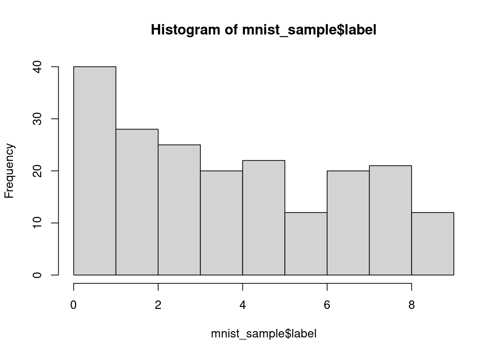
# Compute the basic statistics of all records
#summary(mnist_sample)
# Compute the basic statistics of digits with label 0
#summary(mnist_sample[, mnist_sample$label == 0])Euclidean distance is the basis of many measures of similarity and is the most important distance metric. You can compute the Euclidean distance in R using the dist() function. In this exercise, you will compute the Euclidean distance between the first 10 records of the MNIST sample data.
The mnist_sample object is loaded for you.
# Show the labels of the first 10 records
mnist_sample$label[1:10] [1] 5 0 7 0 9 3 4 1 2 6# Compute the Euclidean distance of the first 10 records
distances <- dist(mnist_sample[1:10, -1])
# Show the distances values
distances 1 2 3 4 5 6 7 8
2 2185.551
3 2656.407 2869.979
4 2547.027 2341.249 2936.772
5 2406.509 2959.108 1976.406 2870.928
6 2343.982 2759.681 2452.568 2739.470 2125.723
7 2464.388 2784.158 2573.667 2870.918 2174.322 2653.703
8 2149.872 2668.903 1999.892 2585.980 2067.044 2273.248 2407.962
9 2959.129 3209.677 2935.262 3413.821 2870.746 3114.508 2980.663 2833.447
10 2728.657 3009.771 2574.752 2832.521 2395.589 2655.864 2464.301 2550.126
9
2
3
4
5
6
7
8
9
10 2695.166# Plot the numeric matrix of the distances in a heatmap
heatmap(as.matrix(distances),
Rowv = NA, symm = TRUE,
labRow = mnist_sample$label[1:10],
labCol = mnist_sample$label[1:10])There are other well-known distance metrics besides the Euclidean distance, like the Minkowski distance. This metric can be considered a generalisation of both the Euclidean and Manhattan distance. In R, you can calculate the Minkowsky distance of order p by using dist(…, method = “minkowski”, p).
The MNIST sample data is loaded for you as mnist_sample
# Minkowski distance or order 3
distances_3 <- dist(mnist_sample[1:10, -1], method = "minkowski", p = 3)
distances_3 1 2 3 4 5 6 7
2 1002.6468
3 1169.6470 1228.8295
4 1127.4919 1044.9182 1249.6133
5 1091.3114 1260.3549 941.1654 1231.7432
6 1063.7026 1194.1212 1104.2581 1189.9558 996.2687
7 1098.4279 1198.8891 1131.4498 1227.7888 1005.7588 1165.4475
8 1006.9070 1169.4720 950.6812 1143.3503 980.6450 1056.1814 1083.2255
9 1270.0240 1337.2068 1257.4052 1401.2461 1248.0777 1319.2768 1271.7095
10 1186.9620 1268.1539 1134.0371 1219.1388 1084.5416 1166.9129 1096.3586
8 9
2
3
4
5
6
7
8
9 1236.9178
10 1133.2929 1180.7970heatmap(as.matrix(distances_3 ),
Rowv = NA, symm = TRUE,
labRow = mnist_sample$label[1:10],
labCol = mnist_sample$label[1:10])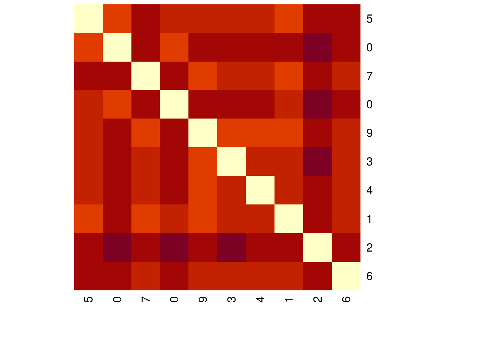
# Minkowski distance of order 2
distances_2 <- dist(mnist_sample[1:10, -1], method = "minkowski", p = 2)
distances_2 1 2 3 4 5 6 7 8
2 2185.551
3 2656.407 2869.979
4 2547.027 2341.249 2936.772
5 2406.509 2959.108 1976.406 2870.928
6 2343.982 2759.681 2452.568 2739.470 2125.723
7 2464.388 2784.158 2573.667 2870.918 2174.322 2653.703
8 2149.872 2668.903 1999.892 2585.980 2067.044 2273.248 2407.962
9 2959.129 3209.677 2935.262 3413.821 2870.746 3114.508 2980.663 2833.447
10 2728.657 3009.771 2574.752 2832.521 2395.589 2655.864 2464.301 2550.126
9
2
3
4
5
6
7
8
9
10 2695.166heatmap(as.matrix(distances_2),
Rowv = NA, symm = TRUE,
labRow = mnist_sample$label[1:10],
labCol = mnist_sample$label[1:10])
There are more distance metrics that can be used to compute how similar two feature vectors are. For instance, the philentropy package has the function distance(), which implements 46 different distance metrics. For more information, use ?distance in the console. In this exercise, you will compute the KL divergence and check if the results differ from the previous metrics. Since the KL divergence is a measure of the difference between probability distributions you need to rescale the input data by dividing each input feature by the total pixel intensities of that digit. The philentropy package and mnist_sample data have been loaded.
library(philentropy)
library(tidyverse)
# Get the first 10 records
mnist_10 <- mnist_sample[1:10, -1]
# Add 1 to avoid NaN when rescaling
mnist_10_prep <- mnist_10 + 1
# Compute the sums per row
sums <- rowSums(mnist_10_prep)
# Compute KL divergence
distances <- distance(mnist_10_prep/sums, method = "kullback-leibler")
heatmap(as.matrix(distances),
Rowv = NA, symm = TRUE,
labRow = mnist_sample$label[1:10],
labCol = mnist_sample$label[1:10])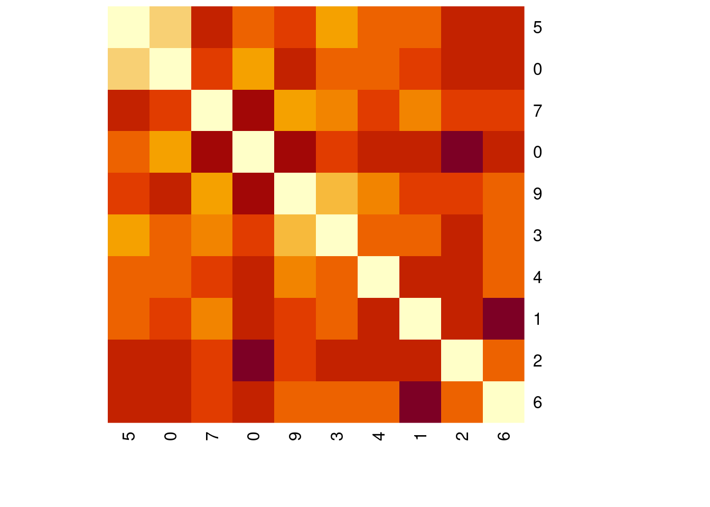
You are going to compute a PCA with the previous mnist_sample dataset. The goal is to have a good representation of each digit in a lower dimensional space. PCA will give you a set of variables, named principal components, that are a linear combination of the input variables. These principal components are ordered in terms of the variance they capture from the original data. So, if you plot the first two principal components you can see the digits in a 2-dimensional space. A sample of 200 records of the MNIST dataset named mnist_sample is loaded for you.
# Get the principal components from PCA
pca_output <- prcomp(mnist_sample[, -1])
# Observe a summary of the output
#summary(pca_output)
# Store the first two coordinates and the label in a data frame
pca_plot <- data.frame(pca_x = pca_output$x[, "PC1"], pca_y = pca_output$x[, "PC2"],
label = as.factor(mnist_sample$label))
# Plot the first two principal components using the true labels as color and shape
ggplot(pca_plot, aes(x = pca_x, y = pca_y, color = label)) +
ggtitle("PCA of MNIST sample") +
geom_text(aes(label = label)) +
theme(legend.position = "none")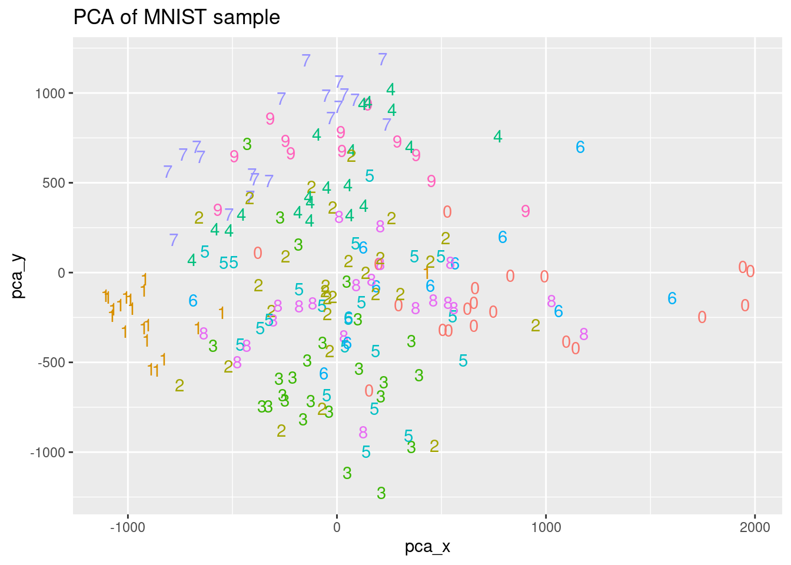
You have seen that PCA has some limitations in correctly classifying digits, mainly due to its linear nature. In this exercise, you are going to use the output from the t-SNE algorithm on the MNIST sample data, named tsne_output and visualize the obtained results. In the next chapter, you will focus on the t-SNE algorithm and learn more about how to use it! The MNIST sample dataset mnist_sample as well as the tsne_output are available in your workspace.
# Explore the tsne_output structure
library(Rtsne)
library(tidyverse)
tsne_output <- Rtsne(mnist_sample[, -1])
#str(tsne_output)
# Have a look at the first records from the t-SNE output
#head(tsne_output)
# Store the first two coordinates and the label in a data.frame
tsne_plot <- data.frame(tsne_x = tsne_output$Y[, 1], tsne_y = tsne_output$Y[, 2],
label = as.factor(mnist_sample$label))
# Plot the t-SNE embedding using the true labels as color and shape
ggplot(tsne_plot, aes(x =tsne_x, y = tsne_y, color = label)) +
ggtitle("T-Sne output") +
geom_text(aes(label = label)) +
theme(legend.position = "none")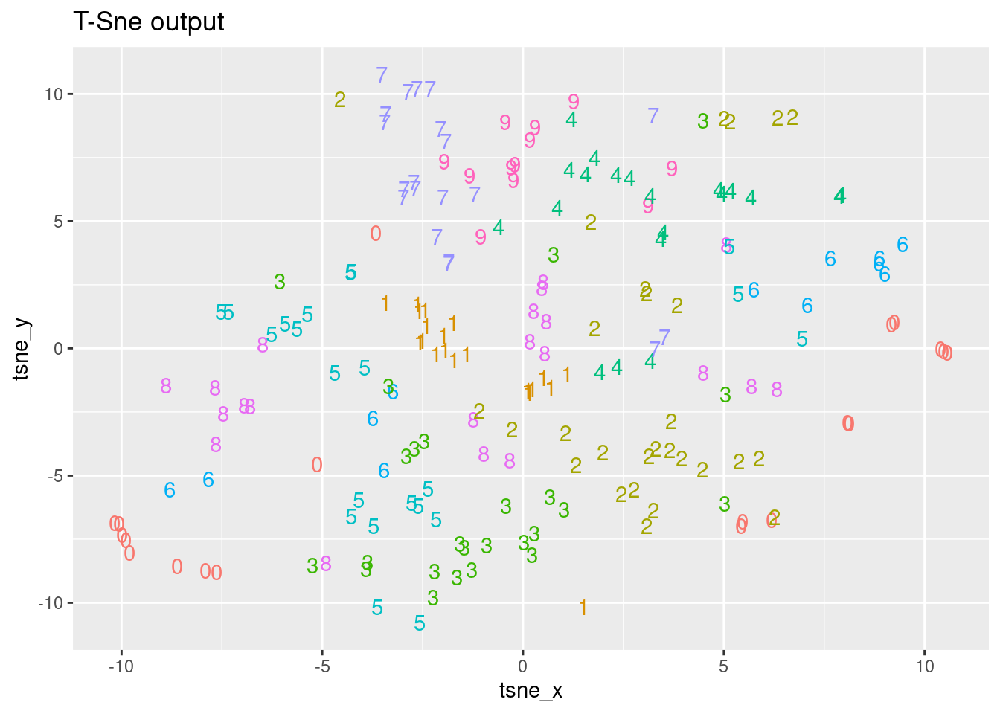
As we have seen, the t-SNE embedding can be computed in R using the Rtsne() function from the Rtsne package in CRAN. Performing a PCA is a common step before running the t-SNE algorithm, but we can skip this step by setting the parameter PCA to FALSE. The dimensionality of the embedding generated by t-SNE can be indicated with the dims parameter. In this exercise, we will generate a three-dimensional embedding from the mnist_sample dataset without doing the PCA step and then, we will plot the first two dimensions. The MNIST sample dataset mnist_sample, as well as the Rtsne and ggplot2 packages, are already loaded.
# Compute t-SNE without doing the PCA step
tsne_output <- Rtsne(mnist_sample[,-1], PCA = FALSE, dim = 3)
# Show the obtained embedding coordinates
head(tsne_output$Y) [,1] [,2] [,3]
[1,] 1.038023 8.883482 3.1956836
[2,] -3.981232 12.725934 4.6647353
[3,] 5.622174 -7.390086 0.7865127
[4,] -14.627619 7.822032 -1.9929169
[5,] 4.575360 -5.413038 -2.0521591
[6,] -1.311153 10.375891 -2.6254346# Store the first two coordinates and plot them
tsne_plot <- data.frame(tsne_x = tsne_output$Y[, 1], tsne_y = tsne_output$Y[, 2],
digit = as.factor(mnist_sample$label))
# Plot the coordinates
ggplot(tsne_plot, aes(x = tsne_x, y = tsne_y, color = digit)) +
ggtitle("t-SNE of MNIST sample") +
geom_text(aes(label = digit)) +
theme(legend.position = "none")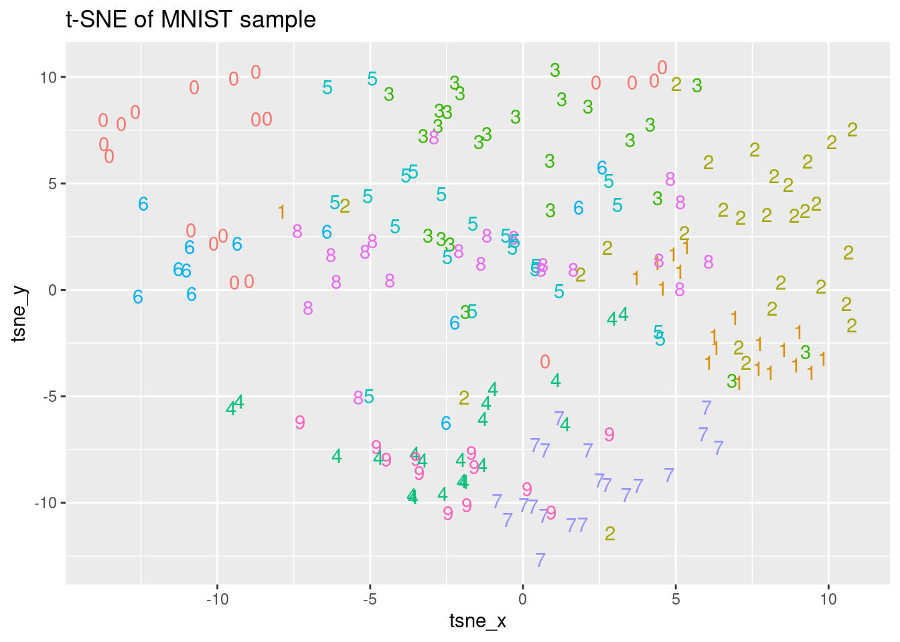
The most important t-SNE output are those related to the K-L divergence of the points in the original high dimensions and in the new lower dimensional space. Remember that the goal of t-SNE is to minimize the K-L divergence between the original space and the new one. In the returned object, the itercosts structure indicates the total cost from the K-L divergence of all the objects in each 50th iteration and the cost structure indicates the K-L divergence of each record in the final iteration. The Rtsne package and the tsne_output object have been loaded for you.
# Inspect the output object's structure
str(tsne_output)List of 14
$ N : int 200
$ Y : num [1:200, 1:3] 1.04 -3.98 5.62 -14.63 4.58 ...
$ costs : num [1:200] 0.00353 0.0026 0.000592 0.002437 0.002035 ...
$ itercosts : num [1:20] 52.9 54.2 54.7 53.1 52.3 ...
$ origD : int 50
$ perplexity : num 30
$ theta : num 0.5
$ max_iter : num 1000
$ stop_lying_iter : int 250
$ mom_switch_iter : int 250
$ momentum : num 0.5
$ final_momentum : num 0.8
$ eta : num 200
$ exaggeration_factor: num 12
- attr(*, "class")= chr [1:2] "Rtsne" "list"# Show total costs after each 50th iteration
tsne_output$itercosts [1] 52.8873029 54.1847034 54.7334424 53.1061930 52.3335593 1.1216984
[7] 0.7348462 0.6175036 0.5546892 0.5328149 0.5245771 0.5205308
[13] 0.5149761 0.5121356 0.5073641 0.5022083 0.4992460 0.4963463
[19] 0.4976183 0.4976648# Plot the evolution of the KL divergence at each 50th iteration
plot(tsne_output$itercosts, type = "l")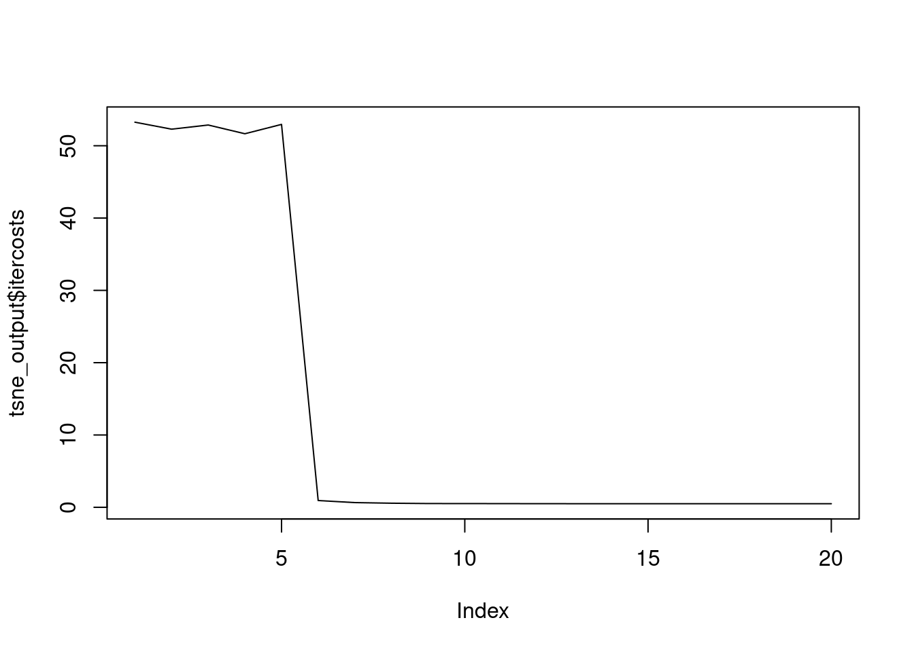
# Inspect the output object's structure
str(tsne_output)List of 14
$ N : int 200
$ Y : num [1:200, 1:3] 1.04 -3.98 5.62 -14.63 4.58 ...
$ costs : num [1:200] 0.00353 0.0026 0.000592 0.002437 0.002035 ...
$ itercosts : num [1:20] 52.9 54.2 54.7 53.1 52.3 ...
$ origD : int 50
$ perplexity : num 30
$ theta : num 0.5
$ max_iter : num 1000
$ stop_lying_iter : int 250
$ mom_switch_iter : int 250
$ momentum : num 0.5
$ final_momentum : num 0.8
$ eta : num 200
$ exaggeration_factor: num 12
- attr(*, "class")= chr [1:2] "Rtsne" "list"# Show the K-L divergence of each record after the final iteration
tsne_output$costs [1] 3.530021e-03 2.599685e-03 5.924902e-04 2.436528e-03 2.034627e-03
[6] 6.001209e-03 3.135383e-03 1.568920e-03 1.944199e-03 2.070910e-03
[11] 2.267584e-03 2.932744e-03 2.595742e-03 1.143692e-03 4.422675e-03
[16] 1.569182e-03 3.260873e-03 2.561276e-03 8.300500e-04 2.321393e-03
[21] 1.401653e-03 2.074688e-03 2.898110e-03 2.139066e-03 2.776283e-03
[26] 2.718612e-03 1.811579e-03 3.366942e-03 4.228741e-03 7.617467e-04
[31] 4.929081e-03 2.755627e-03 3.917489e-03 2.120731e-03 2.152739e-03
[36] 3.839698e-03 5.996013e-03 2.839322e-03 9.818895e-04 3.954330e-03
[41] 3.011183e-03 3.250598e-03 2.369782e-03 1.321014e-03 2.132493e-03
[46] 3.431696e-03 2.396803e-03 4.577028e-03 9.539857e-04 4.481914e-03
[51] 2.030881e-03 3.759461e-03 1.504227e-03 5.372114e-03 2.683576e-03
[56] 6.285989e-03 8.652037e-04 3.984227e-03 5.389851e-04 1.221832e-03
[61] 3.795970e-03 2.868594e-03 8.824829e-04 2.270737e-03 2.714507e-03
[66] 1.105024e-03 8.634369e-04 9.262307e-04 1.972027e-03 8.505556e-04
[71] 2.536400e-03 6.879475e-03 7.218443e-04 3.354772e-03 9.316105e-04
[76] 3.082886e-03 3.346571e-04 2.308966e-03 1.113031e-03 1.168535e-03
[81] 3.060703e-03 1.568738e-03 2.717278e-03 1.185721e-03 5.398724e-03
[86] 2.297166e-03 1.230813e-03 2.954828e-03 9.584376e-04 3.609881e-03
[91] 3.839102e-03 7.871096e-04 3.643323e-03 4.105013e-05 6.230940e-03
[96] 2.515039e-03 1.373320e-03 1.368349e-03 1.748503e-03 1.602098e-03
[101] 1.790355e-03 2.874360e-03 8.646812e-04 1.646978e-03 1.679530e-03
[106] 1.994270e-03 1.722035e-03 2.818426e-03 1.242158e-03 7.290694e-04
[111] 7.861890e-04 2.906854e-03 2.186637e-03 9.461195e-04 3.062573e-03
[116] 2.257497e-03 3.393059e-03 3.152439e-03 -9.186159e-05 4.451588e-03
[121] 2.652422e-03 4.955555e-03 7.148938e-04 1.144588e-03 3.484112e-03
[126] 3.267149e-03 4.779442e-03 2.004987e-03 4.584098e-03 2.184703e-03
[131] 8.406337e-03 3.202073e-03 3.358857e-03 1.646605e-03 1.201331e-03
[136] 1.990919e-03 4.518819e-03 1.296389e-03 2.477119e-03 3.405090e-03
[141] 1.630757e-03 2.358104e-03 2.704090e-03 2.123182e-03 1.464632e-03
[146] 6.461852e-03 1.388184e-03 2.120510e-03 2.093230e-03 1.696249e-03
[151] -5.540920e-05 2.788442e-03 2.491513e-03 2.332105e-03 5.614127e-03
[156] 3.369839e-03 5.516909e-03 2.460858e-03 1.673737e-04 9.742207e-04
[161] 1.679469e-03 4.872445e-04 2.702197e-03 2.517293e-03 2.169055e-03
[166] 1.904703e-03 1.148796e-03 1.954435e-03 3.942924e-03 1.411802e-03
[171] 8.772173e-04 9.290012e-04 1.582145e-03 3.036634e-03 4.338338e-03
[176] 4.480464e-03 2.910440e-03 3.516309e-03 5.484183e-03 2.567592e-03
[181] 1.569874e-03 1.436286e-03 2.978119e-03 1.432727e-03 2.146552e-03
[186] 1.442720e-03 1.205103e-03 4.061972e-03 4.050638e-03 1.214163e-03
[191] 4.770479e-03 1.731418e-03 2.464039e-03 3.151217e-03 2.123669e-03
[196] 5.213217e-04 1.762533e-03 2.319270e-03 2.339778e-03 1.444065e-03# Plot the K-L divergence of each record after the final iteration
plot(tsne_output$costs, type = "l")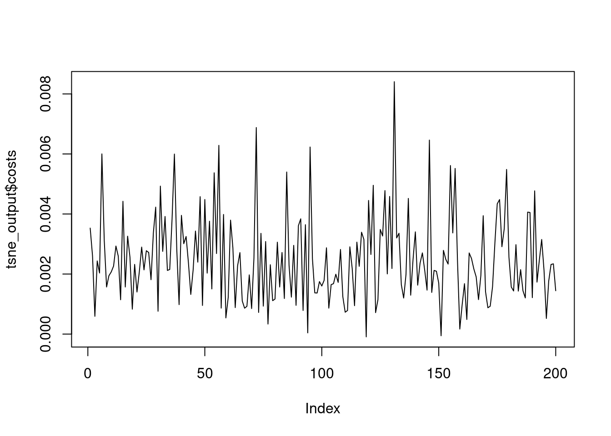
t-SNE is a stochastic algorithm, meaning there is some randomness inherent to the process. To ensure reproducible results it is necessary to fix a seed before every new execution. This way, you can tune the algorithm hyper-parameters and isolate the effect of the randomness. In this exercise, the goal is to generate two embeddings and check that they are identical. The mnist_sample dataset is available in your workspace.
# Generate a three-dimensional t-SNE embedding without PCA
tsne_output <- Rtsne(mnist_sample[, -1], PCA = FALSE, dim = 3)
# Generate a new t-SNE embedding with the same hyper-parameter values
tsne_output_new <- Rtsne(mnist_sample[, -1], PCA = FALSE, dim = 3)
# Check if the two outputs are identical
identical(tsne_output, tsne_output_new)[1] FALSE# Generate a three-dimensional t-SNE embedding without PCA
set.seed(1234)
tsne_output <- Rtsne(mnist_sample[, -1], PCA = FALSE, dims = 3)
# Generate a new t-SNE embedding with the same hyper-parameter values
set.seed(1234)
tsne_output_new <- Rtsne(mnist_sample[, -1], PCA = FALSE, dims = 3)
# Check if the two outputs are identical
identical(tsne_output, tsne_output_new)[1] TRUEA common hyper-parameter to optimize in t-SNE is the optimal number of iterations. As you have seen before it is important to always use the same seed before you can compare different executions. To optimize the number of iterations, you can increase the max_iter parameter of Rtsne() and observe the returned itercosts to find the minimum K-L divergence. The mnist_sample dataset and the Rtsne package have been loaded for you.
# Set seed to ensure reproducible results
set.seed(1234)
# Execute a t-SNE with 2000 iterations
tsne_output <- Rtsne(mnist_sample[, -1], max_iter = 2000,PCA = TRUE, dims = 2)
# Observe the output costs
tsne_output$itercosts [1] 53.3290786 53.2244985 52.2552243 53.0855081 53.2869529 1.0962201
[7] 0.8253614 0.7929360 0.7815495 0.7787592 0.7786192 0.7713815
[13] 0.7651633 0.7471433 0.7454131 0.7458568 0.7475261 0.7453661
[19] 0.7439994 0.7298887 0.6989778 0.6993673 0.7012341 0.6989279
[25] 0.6974807 0.6975004 0.6955154 0.6984345 0.7003433 0.7004715
[31] 0.7002442 0.7002176 0.7003945 0.6978038 0.6970268 0.6995675
[37] 0.6978879 0.6997786 0.6996063 0.7009296# Get the 50th iteration with the minimum K-L cost
which.min(tsne_output$itercosts)[1] 27The perplexity parameter indicates the balance between the local and global aspect of the input data. The parameter is an estimate of the number of close neighbors of each original point. Typical values of this parameter fall in the range of 5 to 50. We will generate three different t-SNE executions with the same number of iterations and perplexity values of 5, 20, and 50 and observe the differences in the K-L divergence costs. The optimal number of iterations we found in the last exercise (1200) will be used here. The mnist_sample dataset and the Rtsne package have been loaded for you.
# Set seed to ensure reproducible results
par(mfrow = c(3, 1))
set.seed(1234)
perp <- c(5, 20, 50)
models <- list()
for (i in 1:length(perp)) {
# Execute a t-SNE with perplexity 5
perplexity = perp[i]
tsne_output <- Rtsne(mnist_sample[, -1], perplexity = perplexity, max_iter = 1300)
# Observe the returned K-L divergence costs at every 50th iteration
models[[i]] <- tsne_output
plot(tsne_output$itercosts,
main = paste("Perplexity", perplexity),
type = "l", ylab = "itercosts")
}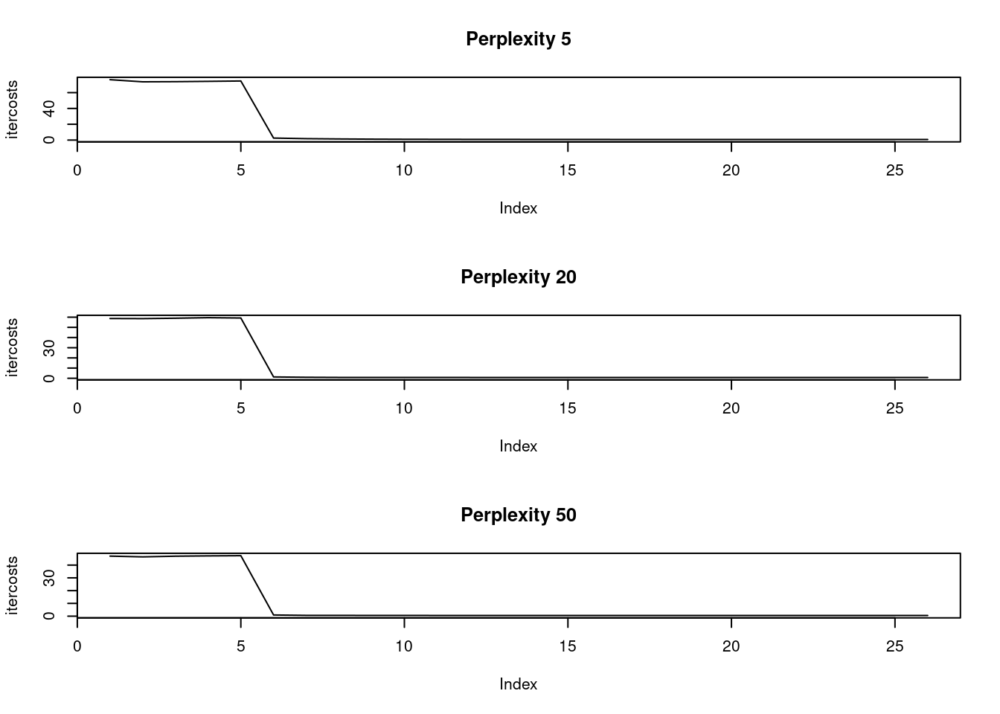
names(models) <- paste0("perplexity",perp)Now, let’s investigate the effect of the perplexity values with a bigger MNIST dataset of 10.000 records. It would take a lot of time to execute t-SNE for this many records on the DataCamp platform. This is why the pre-loaded output of two t-SNE embeddings with perplexity values of 5 and 50, named tsne_output_5 and tsne_output_50 are available in the workspace. We will look at the K-L costs and plot them using the digit label from the mnist_10k dataset, which is also available in the environment. The Rtsne and ggplot2 packages have been loaded.
# Observe the K-L divergence costs with perplexity 5 and 50
tsne_output_5 <- models$perplexity5
tsne_output_50 <- models$perplexity50
# Generate the data frame to visualize the embedding
tsne_plot_5 <- data.frame(tsne_x = tsne_output_5$Y[, 1], tsne_y = tsne_output_5$Y[, 2], digit = as.factor(mnist_sample$label))
tsne_plot_50 <- data.frame(tsne_x = tsne_output_50$Y[, 1], tsne_y = tsne_output_50$Y[, 2], digit = as.factor(mnist_sample$label))
# Plot the obtained embeddings
ggplot(tsne_plot_5, aes(x = tsne_x, y = tsne_y, color = digit)) +
ggtitle("MNIST t-SNE with 1300 iter and Perplexity=5") +
geom_text(aes(label = digit)) +
theme(legend.position="none")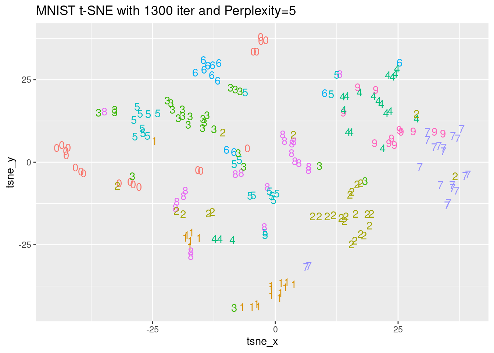
ggplot(tsne_plot_50, aes(x = tsne_x, y = tsne_y, color = digit)) +
ggtitle("MNIST t-SNE with 1300 iter and Perplexity=50") +
geom_text(aes(label = digit)) +
theme(legend.position="none")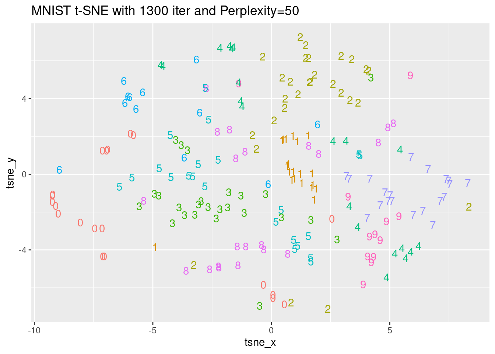
As seen in the video, you can use the obtained representation of t-SNE in a lower dimension space to classify new digits based on the Euclidean distance to known clusters of digits. For this task, let’s start with plotting the spatial distribution of the digit labels in the embedding space. You are going to use the output of a t-SNE execution of 10K MNIST records named tsne and the true labels can be found in a dataset named mnist_10k. In this exercise, you will use the first 5K records of tsne and mnist_10k datasets and the goal is to visualize the obtained t-SNE embedding. The ggplot2 package has been loaded for you.
library(data.table)
mnist_10k <- readRDS("mnist_10k.rds") %>% setDT()
tsne <- Rtsne(mnist_10k[, -1], perplexity = 50, max_iter = 1500)
# Prepare the data.frame
tsne_plot <- data.frame(tsne_x = tsne$Y[1:5000, 1],
tsne_y = tsne$Y[1:5000, 2],
digit = as.factor(mnist_10k[1:5000, ]$label))
# Plot the obtained embedding
ggplot(tsne_plot, aes(x = tsne_x, y = tsne_y, color = digit)) +
ggtitle("MNIST embedding of the first 5K digits") +
geom_text(aes(label = digit)) +
theme(legend.position="none")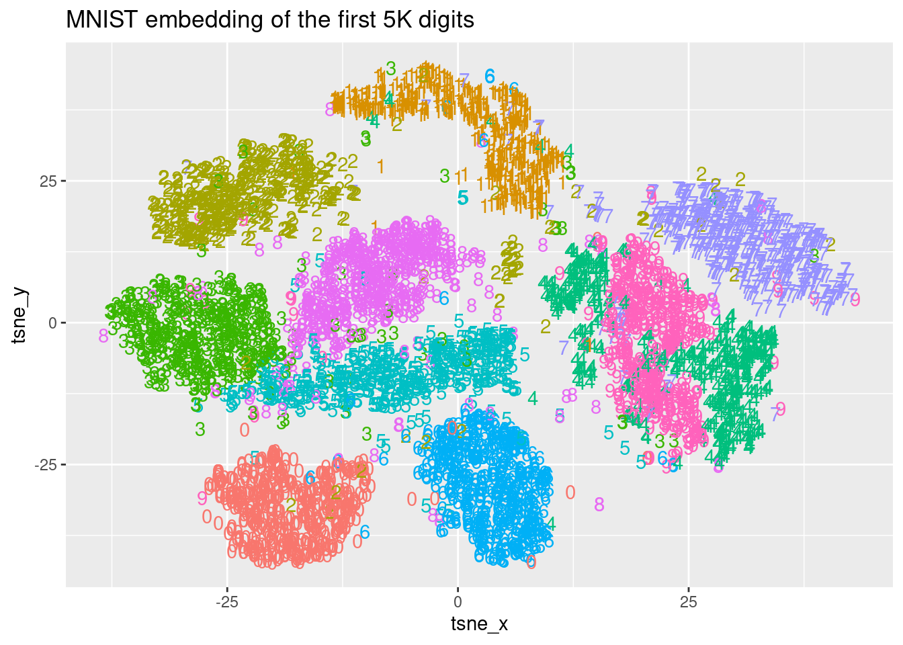
Since the previous visual representation of the digit in a low dimensional space makes sense, you want to compute the centroid of each class in this lower dimensional space. This centroid can be used as a prototype of the digit and you can classify new digits based on their Euclidean distance to these ones. The MNIST data mnist_10k and t-SNE output tsne are available in the workspace. The data.table package has been loaded for you.
# Get the first 5K records and set the column names
dt_prototypes <- as.data.table(tsne$Y[1:5000,])
setnames(dt_prototypes, c("X","Y"))
# Paste the label column as factor
dt_prototypes[, label := as.factor(mnist_10k[1:5000,]$label)]
# Compute the centroids per label
dt_prototypes[, mean_X := mean(X), by = label]
dt_prototypes[, mean_Y := mean(Y), by = label]
# Get the unique records per label
dt_prototypes <- unique(dt_prototypes, by = "label")
dt_prototypes X Y label mean_X mean_Y
1: 34.835576 16.996845 7 30.167171 13.979335
2: 16.417303 3.914098 4 23.015486 -4.668565
3: 8.523417 24.050519 1 1.162703 33.822984
4: 9.346855 -26.402177 6 3.616021 -27.402390
5: -11.365115 -6.049854 5 -6.425186 -8.957745
6: -5.704105 7.608415 8 -8.415119 6.278887
7: -34.408062 2.209488 3 -25.853224 -1.354711
8: -29.504694 16.977549 2 -20.059132 21.122323
9: -19.469866 -30.616292 0 -17.952830 -32.331439
10: 27.605614 4.103024 9 20.453515 -3.364576One way to measure the label similarity for each digit is by computing the Euclidean distance in the lower dimensional space obtained from the t-SNE algorithm. You need to use the previously calculated centroids stored in dt_prototypes and compute the Euclidean distance to the centroid of digit 1 for the last 5000 records from tsne and mnist_10k datasets that are labeled either as 1 or 0. Note that the last 5000 records of tsne were not used before. The MNIST data mnist_10k and t-SNE output tsne are available in the workspace. The data.table package has been loaded for you.
# Store the last 5000 records in distances and set column names
distances <- as.data.table(tsne$Y[5001:10000,])
setnames(distances, c("X", "Y"))
# Paste the true label
distances[, label := mnist_10k[5001:10000,]$label]
distances[, mean_X := mean(X), by = label]
distances[, mean_Y := mean(Y), by = label]
# Filter only those labels that are 1 or 0
distances_filtered <- distances[label == 1 | label == 0]
# Compute Euclidean distance to prototype of digit 1
distances_filtered[, dist_1 := sqrt( (X - dt_prototypes[label == 1,]$mean_X)^2 +
(Y - dt_prototypes[label == 1,]$mean_Y)^2)]In distances, the distances of 1108 records to the centroid of digit 1 are stored in dist_1. Those records correspond to digits you already know are 1’s or 0’s. You can have a look at the basic statistics of the distances from records that you know are 0 and 1 (label column) to the centroid of class 1 using summary(). Also, if you plot a histogram of those distances and fill them with the label you can check if you are doing a good job identifying the two classes with this t-SNE classifier. The data.table and ggplot2 packages, as well as the distances object, have been loaded for you.
# Compute the basic statistics of distances from records of class 1
summary(distances_filtered[label == 1]$dist_1) Min. 1st Qu. Median Mean 3rd Qu. Max.
0.9694 6.5282 8.8059 9.0494 11.6443 54.7206 # Compute the basic statistics of distances from records of class 0
summary(distances_filtered[label == 0]$dist_1) Min. 1st Qu. Median Mean 3rd Qu. Max.
49.54 64.67 68.42 68.86 73.02 78.97 # Plot the histogram of distances of each class
ggplot(distances_filtered,
aes(x = dist_1, fill = as.factor(label))) +
geom_histogram(binwidth = 5, alpha = .5,
position = "identity", show.legend = FALSE) +
ggtitle("Distribution of Euclidean distance 1 vs 0")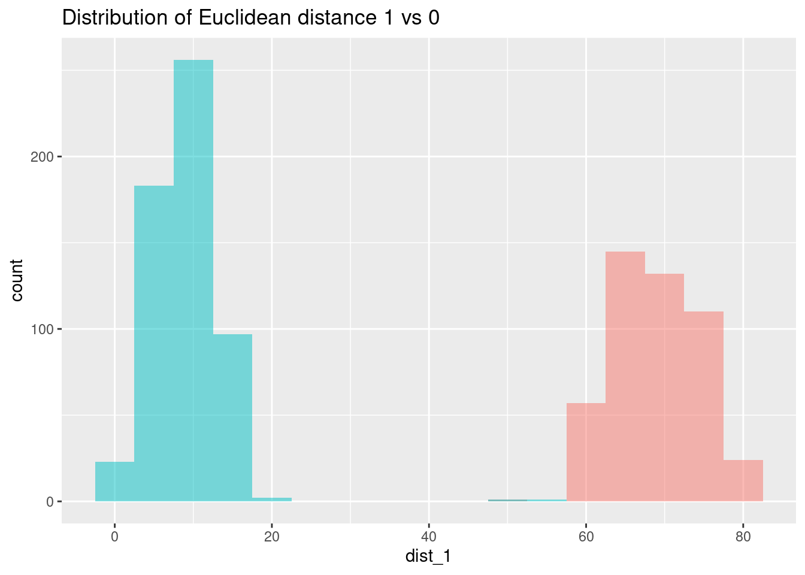
In this exercise, you will do some data exploration on a sample of the credit card fraud detection dataset from Kaggle. For any problem, starting with some data exploration is a good practice and helps us better understand the characteristics of the data.
The credit card fraud dataset is already loaded in the environment as a data table with the name creditcard. As you saw in the video, it consists of 30 numerical variables. The Class column indicates if the transaction is fraudulent. The ggplot2 package has been loaded for you.
load("creditcard.RData")
setDT(creditcard)
# Look at the data dimensions
dim(creditcard)[1] 28923 31# Explore the column names
#names(creditcard)
# Explore the structure
#str(creditcard)
# Generate a summary
summary(creditcard) Time V1 V2 V3
Min. : 26 Min. :-56.40751 Min. :-72.71573 Min. :-31.1037
1st Qu.: 54230 1st Qu.: -0.96058 1st Qu.: -0.58847 1st Qu.: -0.9353
Median : 84512 Median : -0.02400 Median : 0.08293 Median : 0.1659
Mean : 94493 Mean : -0.08501 Mean : 0.05955 Mean : -0.1021
3rd Qu.:139052 3rd Qu.: 1.30262 3rd Qu.: 0.84003 3rd Qu.: 1.0119
Max. :172788 Max. : 2.41150 Max. : 22.05773 Max. : 3.8771
V4 V5 V6
Min. :-5.071241 Min. :-31.35675 Min. :-26.16051
1st Qu.:-0.824978 1st Qu.: -0.70869 1st Qu.: -0.78792
Median : 0.007618 Median : -0.06071 Median : -0.28396
Mean : 0.073391 Mean : -0.04367 Mean : -0.02722
3rd Qu.: 0.789293 3rd Qu.: 0.61625 3rd Qu.: 0.37911
Max. :16.491217 Max. : 34.80167 Max. : 20.37952
V7 V8 V9
Min. :-43.55724 Min. :-50.42009 Min. :-13.43407
1st Qu.: -0.57404 1st Qu.: -0.21025 1st Qu.: -0.66974
Median : 0.02951 Median : 0.01960 Median : -0.06343
Mean : -0.08873 Mean : -0.00589 Mean : -0.04295
3rd Qu.: 0.57364 3rd Qu.: 0.33457 3rd Qu.: 0.58734
Max. : 29.20587 Max. : 20.00721 Max. : 8.95567
V10 V11 V12 V13
Min. :-24.58826 Min. :-4.11026 Min. :-18.6837 Min. :-3.844974
1st Qu.: -0.54827 1st Qu.:-0.75404 1st Qu.: -0.4365 1st Qu.:-0.661168
Median : -0.09843 Median :-0.01036 Median : 0.1223 Median :-0.009685
Mean : -0.08468 Mean : 0.06093 Mean : -0.0943 Mean :-0.002110
3rd Qu.: 0.44762 3rd Qu.: 0.77394 3rd Qu.: 0.6172 3rd Qu.: 0.664794
Max. : 15.33174 Max. :12.01891 Max. : 4.8465 Max. : 4.569009
V14 V15 V16 V17
Min. :-19.21432 Min. :-4.498945 Min. :-14.12985 Min. :-25.1628
1st Qu.: -0.44507 1st Qu.:-0.595272 1st Qu.: -0.48770 1st Qu.: -0.4951
Median : 0.04865 Median : 0.045992 Median : 0.05736 Median : -0.0742
Mean : -0.09653 Mean :-0.007251 Mean : -0.06186 Mean : -0.1046
3rd Qu.: 0.48765 3rd Qu.: 0.646584 3rd Qu.: 0.52147 3rd Qu.: 0.3956
Max. : 7.75460 Max. : 5.784514 Max. : 5.99826 Max. : 7.2150
V18 V19 V20
Min. :-9.49875 Min. :-4.395283 Min. :-20.097918
1st Qu.:-0.51916 1st Qu.:-0.462158 1st Qu.: -0.211663
Median :-0.01595 Median : 0.010494 Median : -0.059160
Mean :-0.04344 Mean : 0.009424 Mean : 0.006943
3rd Qu.: 0.48634 3rd Qu.: 0.471172 3rd Qu.: 0.141272
Max. : 3.88618 Max. : 5.228342 Max. : 24.133894
V21 V22 V23
Min. :-22.889347 Min. :-8.887017 Min. :-36.66600
1st Qu.: -0.230393 1st Qu.:-0.550210 1st Qu.: -0.16093
Median : -0.028097 Median :-0.000187 Median : -0.00756
Mean : 0.004995 Mean :-0.006271 Mean : 0.00418
3rd Qu.: 0.190465 3rd Qu.: 0.516596 3rd Qu.: 0.15509
Max. : 27.202839 Max. : 8.361985 Max. : 13.65946
V24 V25 V26
Min. :-2.822684 Min. :-6.712624 Min. :-1.658162
1st Qu.:-0.354367 1st Qu.:-0.319410 1st Qu.:-0.328496
Median : 0.038722 Median : 0.011815 Median :-0.054131
Mean : 0.000741 Mean :-0.002847 Mean :-0.002546
3rd Qu.: 0.440797 3rd Qu.: 0.351797 3rd Qu.: 0.237782
Max. : 3.962197 Max. : 5.376595 Max. : 3.119295
V27 V28 Amount Class
Min. :-8.358317 Min. :-8.46461 Min. : 0.00 Length:28923
1st Qu.:-0.071275 1st Qu.:-0.05424 1st Qu.: 5.49 Class :character
Median : 0.002727 Median : 0.01148 Median : 22.19 Mode :character
Mean :-0.000501 Mean : 0.00087 Mean : 87.90
3rd Qu.: 0.095974 3rd Qu.: 0.08238 3rd Qu.: 78.73
Max. : 7.994762 Max. :33.84781 Max. :11898.09 # Plot a histogram of the transaction time
ggplot(creditcard, aes(x = Time)) +
geom_histogram()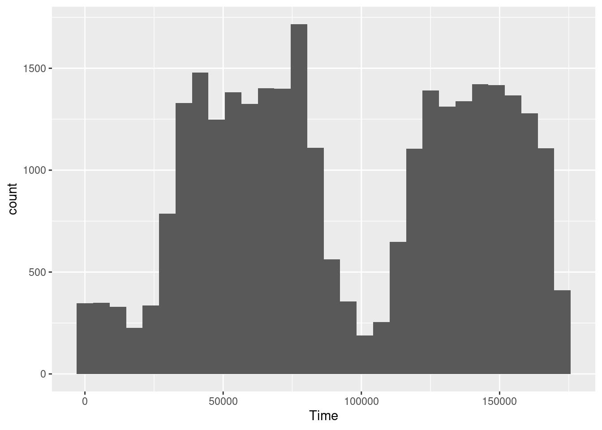
Before we can apply the t-SNE algorithm to perform a dimensionality reduction, we need to split the original data into a training and test set. Next, we will perform an under-sampling of the majority class and generate a balanced training set. Generating a balanced dataset is a good practice when we are using tree-based models. In this exercise you already have the creditcard dataset loaded in the environment. The ggplot2 and data.table packages are already loaded.
# Extract positive and negative instances of fraud
creditcard_pos <- creditcard[Class == 1]
creditcard_neg <- creditcard[Class == 0]
# Fix the seed
set.seed(1234)
# Create a new negative balanced dataset by undersampling
creditcard_neg_bal <- creditcard_neg[sample(1:nrow(creditcard_neg), nrow(creditcard_pos))]
# Generate a balanced train set
creditcard_train <- rbind(creditcard_pos, creditcard_neg_bal)In this exercise, we are going to train a random forest model using the original features from the credit card dataset. The goal is to detect new fraud instances in the future and we are doing that by learning the patterns of fraud instances in the balanced training set. Remember that a random forest can be trained with the following piece of code: randomForest(x = features, y = label, ntree = 100) The only pre-processing that has been done to the original features was to scale the Time and Amount variables. You have the balanced training dataset available in the environment as creditcard_train. The randomForest package has been loaded.
# Fix the seed
set.seed(1234)
library(randomForest)
# Separate x and y sets
train_x <- creditcard_train[,-31]
train_y <- creditcard_train$Class %>% as.factor()
# Train a random forests
rf_model <- randomForest(x = train_x, y = train_y, ntree = 100)
# Plot the error evolution and variable importance
plot(rf_model, main = "Error evolution vs number of trees")
# Fix the seed
set.seed(1234)
# Separate x and y sets
train_x <- creditcard_train[,-31]
train_y <- creditcard_train$Class %>%as.factor()
# Train a random forests
rf_model <- randomForest(x = train_x, y = train_y, ntree = 100)
# Plot the error evolution and variable importance
plot(rf_model, main = "Error evolution vs number of trees")
legend("topright", colnames(rf_model$err.rate),col=1:3,cex=0.8,fill=1:3)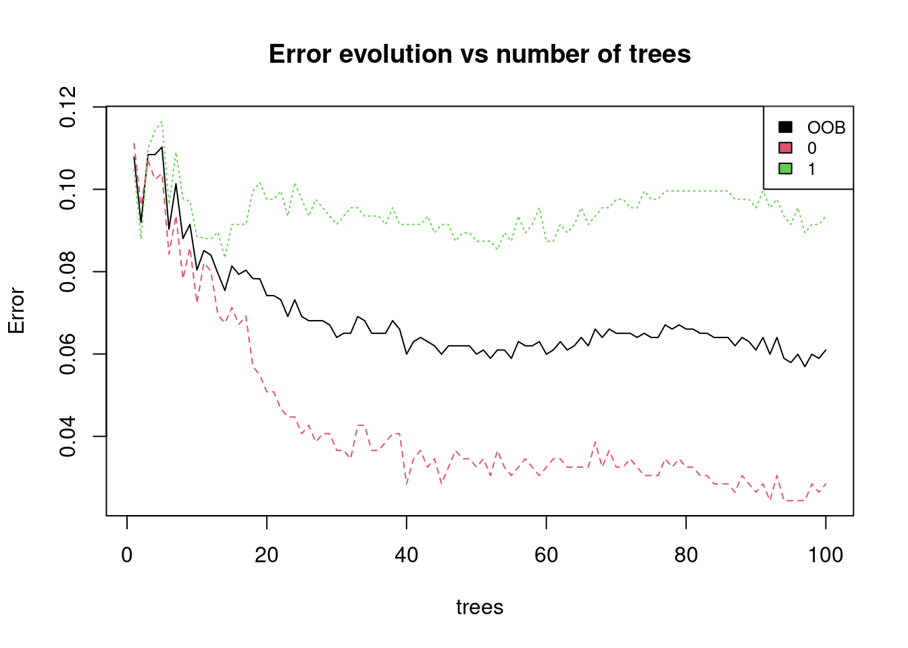
varImpPlot(rf_model, main = "Variable importance")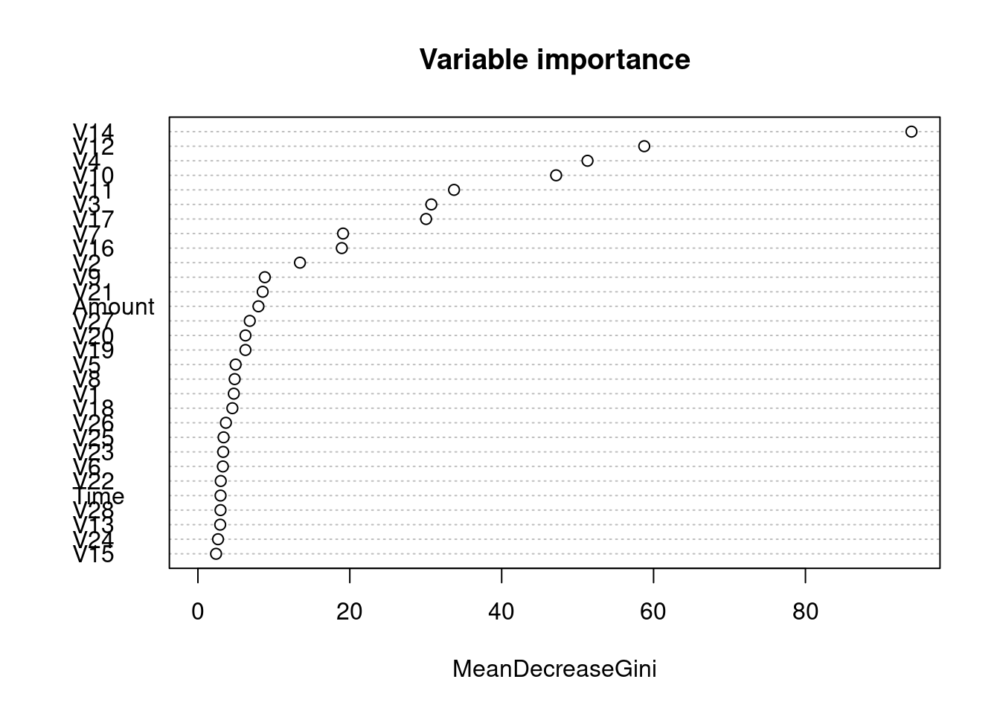
In this exercise, we are going to generate a t-SNE embedding using only the balanced training set creditcard_train. The idea is to train a random forest using the two coordinates of the generated embedding instead of the original 30 dimensions. Due to computational restrictions, we are going to compute the embedding of the training data only, but note that in order to generate predictions from the test set we should compute the embedding of the test set together with the train set. Then, we will visualize the obtained embedding highlighting the two classes in order to clarify if we can differentiate between fraud and non-fraud transactions. The creditcard_train data, as well as the Rtsne and ggplot2 packages, have been loaded.
# Set the seed
#set.seed(1234)
# Generate the t-SNE embedding
creditcard_train[, Time := scale(Time)]
nms <- names(creditcard_train)
pred_nms <- nms[nms != "Class"]
range01 <- function(x){(x-min(x))/(max(x)-min(x))}
creditcard_train[, (pred_nms) := lapply(.SD ,range01), .SDcols = pred_nms]
tsne_output <- Rtsne(as.matrix(creditcard_train[, -31]), check_duplicates = FALSE, PCA = FALSE)
# Generate a data frame to plot the result
tsne_plot <- data.frame(tsne_x = tsne_output$Y[,1],
tsne_y = tsne_output$Y[,2],
Class = creditcard_train$Class)
# Plot the embedding usign ggplot and the label
ggplot(tsne_plot, aes(x = tsne_x, y = tsne_y, color = factor(Class))) +
ggtitle("t-SNE of credit card fraud train set") +
geom_text(aes(label = Class)) + theme(legend.position = "none")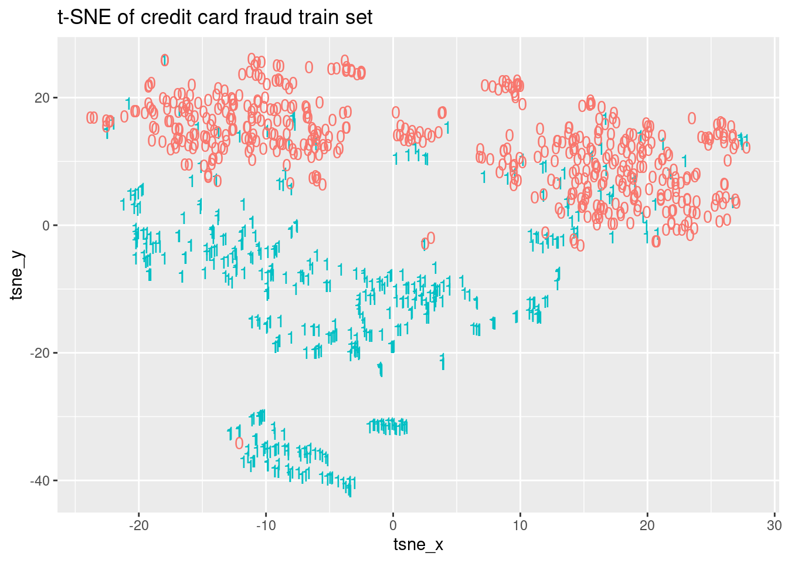
In this exercise, we are going to train a random forest model using the embedding features from the previous t-SNE embedding. So, in this case, we are going to use a two-dimensional dataset that has been generated from the original input features. In the rest of the chapter, we are going to verify if we have a worse, similar, or better performance for this model in comparison to the random forest trained with the original features. In the environment two objects named train_tsne_x and train_tsne_y that contain the features and the Class variable are available. The randomForest package has been loaded as well.
# Fix the seed
set.seed(1234)
train_tsne_x <- tsne_output$Y
# Train a random forest
rf_model_tsne <- randomForest(x = train_tsne_x, y = train_y, ntree = 100)
# Plot the error evolution
plot(rf_model_tsne)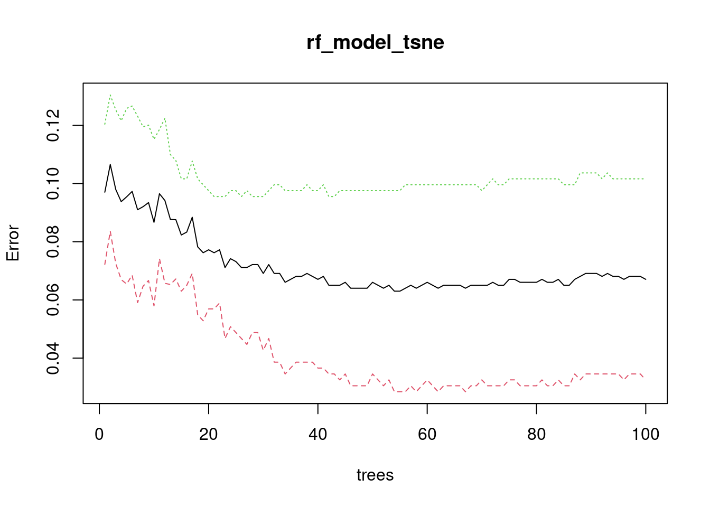
# Plot the variable importance
varImpPlot(rf_model_tsne)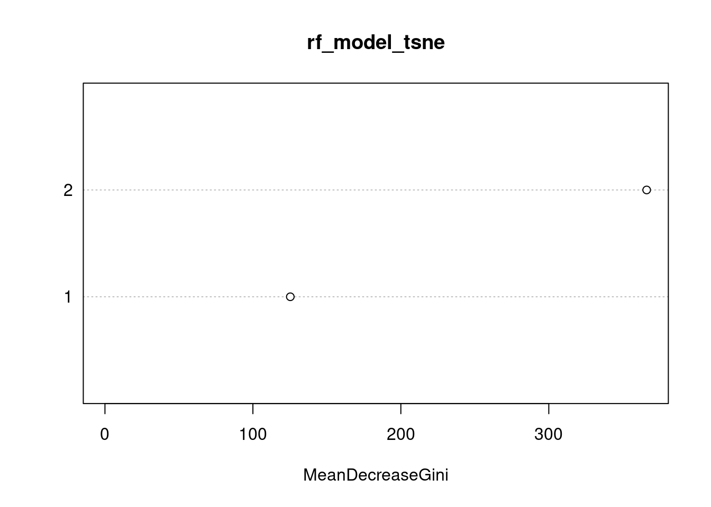
In this exercise, we are using the random forest trained with the original features and generate predictions using the test set. These predictions will be plotted to see the distribution and will be evaluated using the ROCR package by considering the area under the curve.
The random forest model, named rf_model, and the test set, named creditcard_test, are available in the environment. The randomForest and ROCR packages have been loaded for you
# Predict on the test set using the random forest
creditcard_test <- creditcard
pred_rf <- predict(rf_model, creditcard_test, type = "prob")
# Plot a probability distibution of the target class
hist(pred_rf[,2])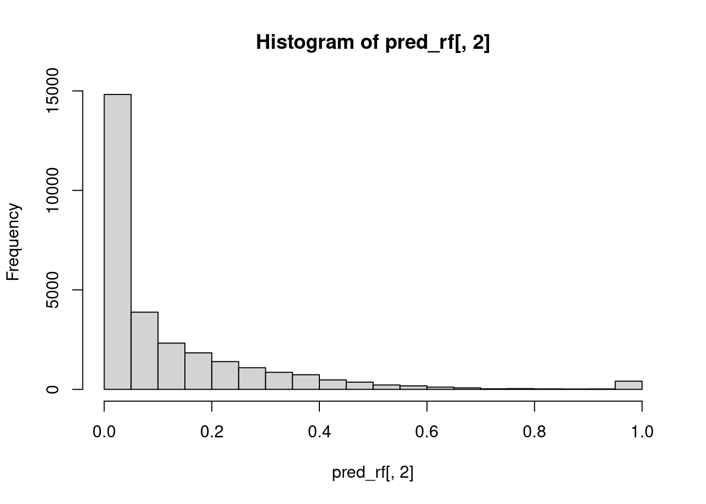
library(ROCR)
# Compute the area under the curve
pred <- prediction(pred_rf[,2], creditcard_test$Class)
perf <- performance(pred, measure = "auc")
perf@y.values[[1]]
[1] 0.9995958Now, we are going to do the same analysis, but instead of using the random forest trained with the original features, we will make predictions using the random forest trained with the t-SNE embedding coordinates. The random forest model is pre-loaded in an object named rf_model_tsne and the t-SNE embedding features from the original test set are stored in the object test_x. Finally, the test set labels are stored in creditcard_test. The randomForest and ROCR packages have been loaded for you.
creditcard_test[, (pred_nms) := lapply(.SD ,range01), .SDcols = pred_nms]
tsne_output <- Rtsne(as.matrix(creditcard_test[, -31]), check_duplicates = FALSE, PCA = FALSE)
test_x <- tsne_output$Y
# Predict on the test set using the random forest generated with t-SNE features
pred_rf <- predict(rf_model_tsne, test_x, type = "prob")
# Plot a probability distibution of the target class
hist(pred_rf[, 2])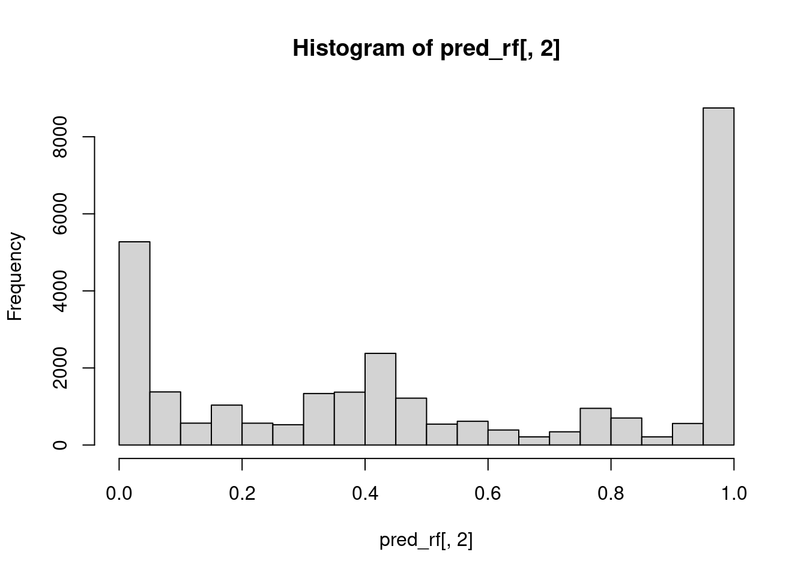
# Compute the area under the curve
pred <- prediction(pred_rf[, 2] , creditcard_test$Class)
perf <- performance(pred, measure = "auc")
perf@y.values[[1]]
[1] 0.3418133In this exercise, we will have a look at the data that is being generated in a specific layer of a neural network. In particular, this data corresponds to the third layer, composed of 128 neurons, of a neural network trained with the balanced credit card fraud dataset generated before. The goal of the exercise is to perform an exploratory data analysis.
# Observe the dimensions
#dim(layer_128_train)
# Show the first six records of the last ten columns
#head(layer_128_train[, 119:128])
# Generate a summary of all columns
#summary(layer_128_train)Now, we would like to visualize the patterns obtained from the neural network model, in particular from the last layer of the neural network. As we mentioned before this last layer has 128 neurons and we have pre-loaded the weights of these neurons in an object named layer_128_train. The goal is to compute a t-SNE embedding using the output of the neurons from this last layer and visualize the embedding colored according to the class. The Rtsne and ggplot2 packages as well as the layer_128_train and creditcard_train have been loaded for you
# Set the seed
set.seed(1234)
# Generate the t-SNE
#tsne_output <- Rtsne(as.matrix(layer_128_train), check_duplicates = FALSE, max_iter = 400, perplexity = 50)
# Prepare data.frame
#tsne_plot <- data.frame(tsne_x = tsne_output$Y[, 1], tsne_y = tsne_output$Y[, 2],
# Class = creditcard_train$Class)
# Plot the data
# ggplot(tsne_plot, aes(x = tsne_x, y = tsne_y, color = Class)) +
# geom_point() +
# ggtitle("Credit card embedding of Last Neural Network Layer")Now, we would like to visualize the patterns obtained from the neural network model, in particular from the last layer of the neural network. As we mentioned before this last layer has 128 neurons and we have pre-loaded the weights of these neurons in an object named layer_128_train. The goal is to compute a t-SNE embedding using the output of the neurons from this last layer and visualize the embedding colored according to the class. The Rtsne and ggplot2 packages as well as the layer_128_train and creditcard_train have been loaded for you
# Set the seed
# set.seed(1234)
#
# # Generate the t-SNE
# tsne_output <- Rtsne(as.matrix(layer_128_train), check_duplicates = FALSE, max_iter = 400, perplexity = 50)
#
# # Prepare data.frame
# tsne_plot <- data.frame(tsne_x = tsne_output$Y[, 1], tsne_y = tsne_output$Y[, 2],
# Class = creditcard_train$Class)
#
# # Plot the data
# ggplot(tsne_plot, aes(x = tsne_x, y = tsne_y, color = Class)) +
# geom_point() +
# ggtitle("Credit card embedding of Last Neural Network Layer")The Fashion MNIST dataset contains grayscale images of 10 clothing categories. The first thing to do when you are analyzing a new dataset is to perform an exploratory data analysis in order to understand the data. A sample of the fashion MNIST dataset fashion_mnist, with only 500 records, is pre-loaded for you.
library(data.table)
#load("fashion_mnist_500.RData")
load("fashion_mnist.rda")
set.seed(100)
ind <- sample(1:nrow(fashion_mnist), 1000)
fashion_mnist <- fashion_mnist[ind, ]
# Show the dimensions
dim(fashion_mnist)[1] 1000 785# Create a summary of the last six columns
summary(fashion_mnist[, 780:785]) pixel779 pixel780 pixel781 pixel782
Min. : 0.00 Min. : 0.00 Min. : 0.0 Min. : 0.000
1st Qu.: 0.00 1st Qu.: 0.00 1st Qu.: 0.0 1st Qu.: 0.000
Median : 0.00 Median : 0.00 Median : 0.0 Median : 0.000
Mean : 22.16 Mean : 18.64 Mean : 10.6 Mean : 3.781
3rd Qu.: 1.00 3rd Qu.: 0.00 3rd Qu.: 0.0 3rd Qu.: 0.000
Max. :236.00 Max. :255.00 Max. :231.0 Max. :188.000
pixel783 pixel784
Min. : 0.000 Min. : 0.000
1st Qu.: 0.000 1st Qu.: 0.000
Median : 0.000 Median : 0.000
Mean : 0.934 Mean : 0.043
3rd Qu.: 0.000 3rd Qu.: 0.000
Max. :147.000 Max. :39.000 # Table with the class distribution
table(fashion_mnist$label)
0 1 2 3 4 5 6 7 8 9
100 94 115 90 97 98 97 105 102 102 In this exercise, we are going to visualize an example image of the fashion MNIST dataset. Basically, we are going to plot the 28x28 pixels values. To do this we use:
A custom ggplot theme named plot_theme. A data structure named xy_axis where the pixels values are stored. A character vector named class_names with the names of each class. The fashion_mnist dataset with 500 examples is available in the workspace. The `ggplot2 package is loaded. Note that you can access the definition of the custom theme by typing plot_theme in the console.
library(tidyverse)
plot_theme <- list(
raster = geom_raster(hjust = 0, vjust = 0),
gradient_fill = scale_fill_gradient(low = "white",
high = "black", guide = FALSE),
theme = theme(axis.line = element_blank(),
axis.text = element_blank(),
axis.ticks = element_blank(),
axis.title = element_blank(),
panel.background = element_blank(),
panel.border = element_blank(),
panel.grid.major = element_blank(),
panel.grid.minor = element_blank(),
plot.background = element_blank()))class_names <- c("T-shirt/top", "Trouser", "Pullover",
"Dress", "Coat", "Sandal", "Shirt",
"Sneaker", "Bag", "Ankle", "boot")
xy_axis <- data.frame(x = expand.grid(1:28, 28:1)[,1],
y = expand.grid(1:28, 28:1)[,2])
# Get the data from the last image
plot_data <- cbind(xy_axis, fill = as.data.frame(t(fashion_mnist[500, -1]))[,1])
# Observe the first records
head(plot_data) x y fill
1 1 28 0
2 2 28 0
3 3 28 0
4 4 28 0
5 5 28 0
6 6 28 0# Plot the image using ggplot()
ggplot(plot_data, aes(x, y, fill = fill)) +
ggtitle(class_names[as.integer(fashion_mnist[500, 1])]) +
plot_theme 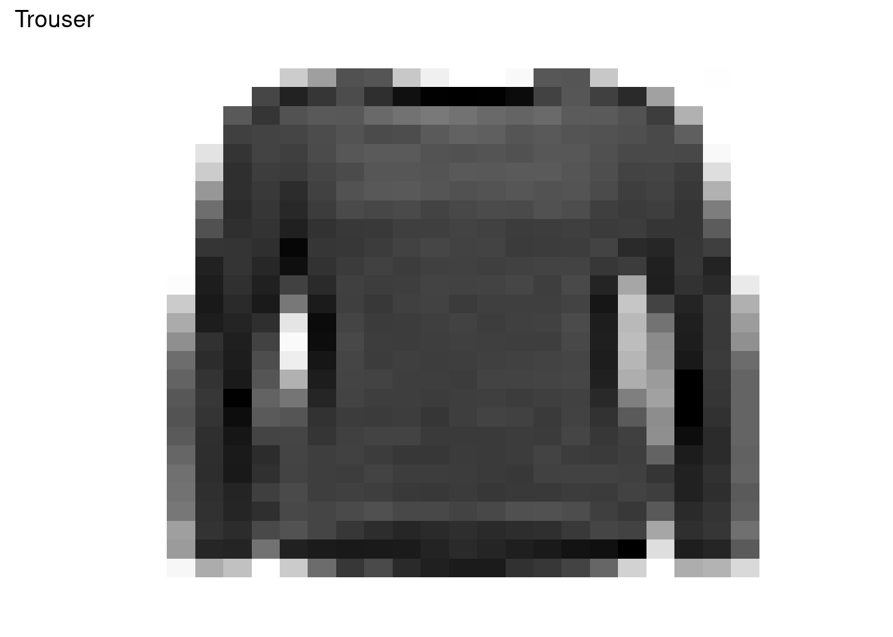
We are going to reduce the dimensionality of the fashion MNIST sample data using the GLRM implementation of h2o. In order to do this, in the next steps we are going to: Start a connection to a h2o cluster by invoking the method h2o.init(). Store the fashion_mnist data into the h2o cluster with as.h2o(). Launch a GLRM model with K=2 (rank-2 model) using the h2o.glrm() function. As we have discussed in the video session, it is important to check the convergence of the objective function. Note that here we are also fixing the seed to ensure the same results. The h2o package and fashion_mnist data are pre-loaded in the environment.
library(h2o)
# Start a connection with the h2o cluster
h2o.init() Connection successful!
R is connected to the H2O cluster:
H2O cluster uptime: 1 hours 11 minutes
H2O cluster timezone: Africa/Nairobi
H2O data parsing timezone: UTC
H2O cluster version: 3.38.0.1
H2O cluster version age: 4 months and 23 days !!!
H2O cluster name: H2O_started_from_R_mburu_cvk380
H2O cluster total nodes: 1
H2O cluster total memory: 3.07 GB
H2O cluster total cores: 8
H2O cluster allowed cores: 8
H2O cluster healthy: TRUE
H2O Connection ip: localhost
H2O Connection port: 54321
H2O Connection proxy: NA
H2O Internal Security: FALSE
R Version: R version 4.2.2 Patched (2022-11-10 r83330) # Store the data into h2o cluster
fashion_mnist.hex <- as.h2o(fashion_mnist, "fashion_mnist.hex")
|
| | 0%
|
|======================================================================| 100%# Launch a GLRM model over fashion_mnist data
model_glrm <- h2o.glrm(training_frame = fashion_mnist.hex,
cols = 2:ncol(fashion_mnist),
k = 2,
seed = 123,
max_iterations = 2100)
|
| | 0%
|
|= | 2%
|
|======================================================================| 100%# Plotting the convergence
plot(model_glrm)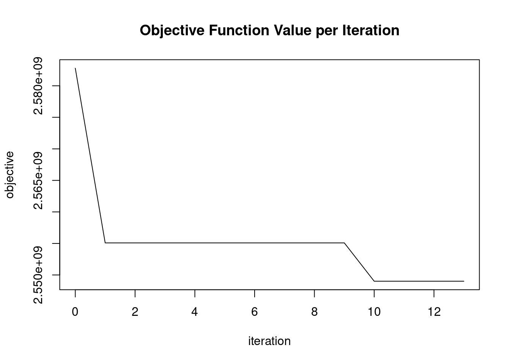
In the previous exercise, we didn’t get good convergence values for the GLRM model. Improving convergence values can sometimes be achieved by applying a transformation to the input data. In this exercise, we are going to normalize the input data before we start building the GLRM model. This can be achieved by setting the transform parameter of h2o.glrm() equal to “NORMALIZE”. The h2o package and fashion_mnist dataset are pre-loaded.
# Start a connection with the h2o cluster
#h2o.init()
# Store the data into h2o cluster
#fashion_mnist.hex <- as.h2o(fashion_mnist, "fashion_mnist.hex")
# Launch a GLRM model with normalized fashion_mnist data
model_glrm <- h2o.glrm(training_frame = fashion_mnist.hex,
transform = "NORMALIZE",
cols = 2:ncol(fashion_mnist),
k = 2,
seed = 123,
max_iterations = 2100)
|
| | 0%
|
|= | 2%
|
|=== | 4%
|
|==== | 5%
|
|===== | 7%
|
|====== | 9%
|
|======= | 11%
|
|========= | 12%
|
|========== | 14%
|
|=========== | 16%
|
|============ | 17%
|
|============= | 19%
|
|=============== | 21%
|
|================ | 23%
|
|================= | 24%
|
|================== | 26%
|
|=================== | 28%
|
|===================== | 29%
|
|====================== | 31%
|
|======================= | 33%
|
|======================== | 35%
|
|========================= | 36%
|
|=========================== | 38%
|
|============================ | 40%
|
|============================= | 41%
|
|============================== | 43%
|
|=============================== | 45%
|
|================================= | 47%
|
|================================== | 48%
|
|======================================================================| 100%# Plotting the convergence
plot(model_glrm)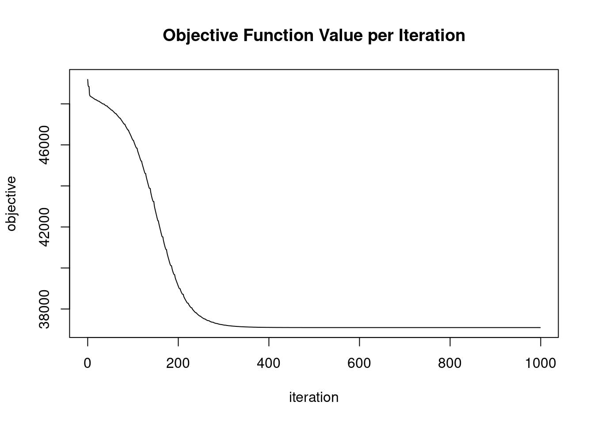
A GLRM model generates the X and Y matrixes. In this exercise, we are going to visualize the obtained low-dimensional representation of the input records in the new K-dimensional space. The output of the X matrix from the previous GLRM model has been loaded with the name X_matrix. This matrix has been obtained by calling:
X_matrix <- as.data.table(h2o.getFrame(model_glrm@model$representation_name))
# Dimension of X_matrix
dim(X_matrix)[1] 1000 2# First records of X_matrix
head(X_matrix) Arch1 Arch2
1: -1.4562898 0.28620951
2: 0.7132191 1.18922464
3: 0.5600450 -1.29628758
4: 0.9997013 -0.51894405
5: 1.3377989 -0.05616662
6: 1.0687898 0.07447071# Plot the records in the new two dimensional space
ggplot(as.data.table(X_matrix), aes(x= Arch1, y = Arch2, color = fashion_mnist$label)) +
ggtitle("Fashion Mnist GLRM Archetypes") +
geom_text(aes(label = fashion_mnist$label)) +
theme(legend.position="none")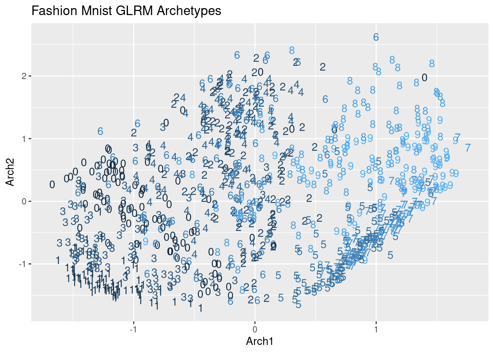
Now, we are going to compute the centroids of the coordinates for each of the two archetypes for each label. We did something similar before for the t-SNE embedding. The goal is to have a representation or prototype of each label in this new two-dimensional space.
The ggplot2 and data.table packages are pre-loaded, as well as the X_matrix object and the fashion_mnist dataset.
# Store the label of each record and compute the centroids
X_matrix[, label := as.numeric(fashion_mnist$label)]
X_matrix[, mean_x := mean(Arch1), by = label]
X_matrix[, mean_y := mean(Arch2), by = label]
# Get one record per label and create a vector with class names
X_mean <- unique(X_matrix, by = "label")
label_names <- c("T-shirt/top", "Trouser", "Pullover",
"Dress", "Coat", "Sandal", "Shirt",
"Sneaker", "Bag", "Ankle boot")
# Plot the centroids
X_mean[, label := factor(label, levels = 0:9, labels = label_names)]
ggplot(X_mean, aes(x = mean_x, y = mean_y, color = label_names)) +
ggtitle("Fashion Mnist GLRM class centroids") +
geom_text(aes(label = label_names)) +
theme(legend.position = "none")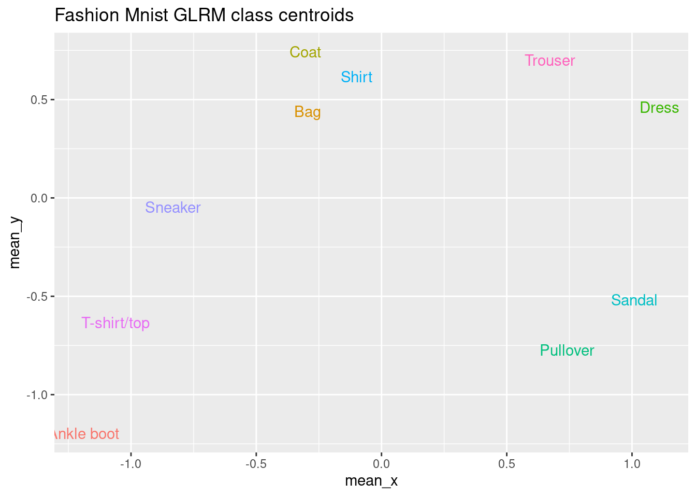
In this exercise, we will use GLRM to impute missing data. We are going to build a GLRM model from a dataset named fashion_mnist_miss, where 20% of values are missing. The goal is to fill these values by making a prediction using h2o.predict() with the GLRM model. In this exercise an h2o instance is already running, so it is not necessary to call h2o.init(). The h2o package and fashion_mnist_miss have been loaded
fashion_mnist_miss <- h2o.insertMissingValues(fashion_mnist.hex,
fraction = 0.2, seed = 1234)
|
| | 0%
|
|======================================================================| 100%# Store the input data in h2o
fashion_mnist_miss.hex <- as.h2o(fashion_mnist_miss, "fashion_mnist_miss.hex")
# Build a GLRM model
model_glrm <- h2o.glrm(training_frame = fashion_mnist_miss.hex,
k = 2,
transform = "NORMALIZE",
max_iterations = 100)
|
| | 0%
|
|===================== | 30%
|
|================================================= | 70%
|
|======================================================================| 100%# Impute missing values
fashion_pred <- predict(model_glrm, fashion_mnist_miss.hex)
|
| | 0%
|
|======================================================================| 100%# Observe the statistics of the first 5 pixels
summary(fashion_pred[, 1:5]) reconstr_label reconstr_pixel2 reconstr_pixel3
Min. :-0.47950 Min. :-0.0015568 Min. :-0.0048536
1st Qu.:-0.26059 1st Qu.:-0.0008525 1st Qu.:-0.0022268
Median :-0.07530 Median :-0.0002846 Median :-0.0003030
Mean :-0.06522 Mean :-0.0002330 Mean :-0.0001716
3rd Qu.: 0.12724 3rd Qu.: 0.0003203 3rd Qu.: 0.0018569
Max. : 0.39351 Max. : 0.0018132 Max. : 0.0058790
reconstr_pixel4 reconstr_pixel5
Min. :-0.0060428 Min. :-0.0035266
1st Qu.:-0.0030836 1st Qu.:-0.0019180
Median :-0.0011572 Median : 0.0003117
Mean :-0.0009483 Mean : 0.0001418
3rd Qu.: 0.0012697 3rd Qu.: 0.0019282
Max. : 0.0066305 Max. : 0.0044367 In this exercise, we are going to train a random forest using the original fashion MNIST dataset with 500 examples. This dataset is preloaded in the environment with the name fashion_mnist. We are going to train a random forest with 20 trees and we will look at the time it takes to compute the model and the out-of-bag error in the 20th tree. The randomForest package is loaded.
# Get the starting timestamp
library(randomForest)
time_start <- proc.time()
# Train the random forest
fashion_mnist[, label := factor(label)]
rf_model <- randomForest(label~., ntree = 20,
data = fashion_mnist)
# Get the end timestamp
time_end <- timetaken(time_start)
# Show the error and the time
rf_model$err.rate[20][1] 0.26time_end[1] "0.634s elapsed (0.634s cpu)"Now, we are going to train a random forest using a compressed representation of the previous 500 input records, using only 8 dimensions!
In this exercise, you a dataset named train_x that contains the compressed training data and another one named train_y that contains the labels are pre-loaded. We are going to calculate computation time and accuracy, similar to what was done in the previous exercise. Since the dimensionality of this dataset is much smaller, we can train a random forest using 500 trees in less time. The randomForest package is already loaded.
model_glrm <- h2o.glrm(training_frame = fashion_mnist.hex,
transform = "NORMALIZE",
cols = 2:ncol(fashion_mnist),
k = 8,
seed = 123,
max_iterations = 1000)
|
| | 0%
|
|= | 2%
|
|=== | 4%
|
|==== | 5%
|
|===== | 7%
|
|====== | 8%
|
|======= | 10%
|
|======== | 11%
|
|========= | 13%
|
|========== | 15%
|
|=========== | 16%
|
|============ | 18%
|
|============== | 19%
|
|=============== | 21%
|
|================ | 22%
|
|================= | 24%
|
|================== | 26%
|
|=================== | 27%
|
|==================== | 29%
|
|===================== | 30%
|
|====================== | 32%
|
|======================= | 33%
|
|========================= | 35%
|
|========================== | 37%
|
|=========================== | 38%
|
|============================ | 40%
|
|============================= | 41%
|
|============================== | 43%
|
|=============================== | 45%
|
|================================ | 46%
|
|======================================================================| 100%train_x <- as.data.table(h2o.getFrame(model_glrm@model$representation_name))
train_y <- fashion_mnist$label %>% as.factor()library(randomForest)
# Get the starting timestamp
time_start <- proc.time()
# Train the random forest
rf_model <- randomForest(x = train_x, y = train_y, ntree = 500)
# Get the end timestamp
time_end <- timetaken(time_start)
# Show the error and the time
rf_model$err.rate[500][1] 0.252time_end[1] "0.300s elapsed (0.300s cpu)"